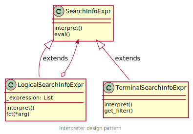

dvas.database package
Copyright (c) 2020-2022 MeteoSwiss, contributors listed in AUTHORS.
Distributed under the terms of the GNU General Public License v3.0 or later.
SPDX-License-Identifier: GPL-3.0-or-later
Submodules
dvas.database.database module
Copyright (c) 2020-2022 MeteoSwiss, contributors listed in AUTHORS.
Distributed under the terms of the GNU General Public License v3.0 or later.
SPDX-License-Identifier: GPL-3.0-or-later
Module contents: Local database management tools
- dvas.database.database.DB_CACHE_SIZE = 10240
Database cache size in kB
- Type
int
- dvas.database.database.DB_FILE_NM = 'local_db.sqlite'
Local database file name
- Type
str
- class dvas.database.database.DatabaseManager(*args, **kwargs)
Bases:
objectLocal data base manager.
Note
If the data base does not exists, the creation will be forced.
- DB_TABLES = [<Model: Info>, <Model: InfosObjects>, <Model: Object>, <Model: Model>, <Model: InfosTags>, <Model: Tag>, <Model: DataSource>, <Model: Data>, <Model: MetaData>, <Model: Prm>, <Model: Flg>]
- property db
Database instance
- Type
peewee.SqliteDatabase
- refresh_db()
Refreshes the database, by deleting the current tables and reloading them with fresh metadata.
- static get_or_none(table, search=None, attr=None, get_first=True)
Get from DB
- Parameters
table (peewee.Model)
search (dict) – Keys [‘join_order’, ‘where’]
attr (list of (list of str)) – Get query result attributes by path
get_first (bool) – return first occurrence or all. Default ot False.
- static model_to_dict(query, recurse=False)
Convert a query to a dictionary
Notes
Must be used in a DB context manager
Args:
- Returns
dict
- get_table(table, search=None, recurse=False)
- Parameters
table
search (dict, optional) – key ‘join_order’ must be a list of database.database.MetadataModel, optional, key ‘where’ a logical peewee expression.
- Returns
dict
- add_data(index, value, info, prm_name, force_write=False)
Add profile data to the DB.
- Parameters
index (np.array of int) – Data index
value (np.array of float) – Data value
info (InfoManager|dict) – Data information. If dict, must fulfill InfoManager.from_dict input args requirements.
prm_name (str)
force_write (bool, optional) – force rewrite of already save data
- Raises
DBInsertError – Error while add data
- get_data(search_expr, prm_name, filter_empty)
Get data from DB
- Parameters
search_expr (str) – Search expression
prm_name (str) – Parameter name
filter_empty (bool) – Filter empty data or not
Returns:
- get_flgs()
Get config flags
- Returns
list
- class dvas.database.database.InfoManagerMetaData(dict_args={})
Bases:
dictClass to define metadata allowed types
Note
This class is used to bypass the missing class Mapping in pampy package.
Todo
We do not use pampy anymore as of v0.6. Do we need to do something about this ? fpavogt, 01.07.2022
- __init__(dict_args={})
- Parameters
dict_args (dict) – keys must be str and values (str, float)
- copy() a shallow copy of D
- update(dict_args)
Update dict
- Parameters
dict_args (dict) – keys must be str and values (str, float)
- class dvas.database.database.InfoManager(edt, oid, tags='', metadata={}, src='')
Bases:
objectData info manager
- __init__(edt, oid, tags='', metadata={}, src='')
Constructor
- Parameters
edt (str | datetime | pd.Timestamp) – Event datetime (UTC)
oid (int|iterable of int) – Object identifier (snr, pid)
tags (str|iterable of str, optional) – Tags. Defaults to ‘’
metadata (dict|InfoManagerMetaData, optional) – Default to {}
src (str) – Default to ‘’
- edt
UTC datetime
- Type
datetime.datetime
- oid
Object id
- Type
int|iterable of int
- tags
Tags
- Type
str|iterable of str
- metadata
Metadata
- Type
dict
- src
Data source
- Type
str
- property eid
Event ID which match 1st corresponding pattern in tags. Defaults to None.
- Type
str
- property rid
Rig ID which match 1st corresponding pattern in tags. Defaults to None.
- Type
str
- property tod
TimeOfDay tag which match 1st corresponding pattern. Defaults to None.
- Type
str
- property mid
Model identifier
- Type
str
- property tags_desc
Tags description
- Type
dict
- property object
Object details
- Type
list of dict
- get_hash()
Return 20 bytes hash as string
- add_tags(val)
Add a tag name
- Parameters
val (list of str) – Tag names to add
- rm_tags(val)
Remove a tag name
- Parameters
val (list of str) – Tag names to remove
- add_metadata(key, val)
Add metadata
- Parameters
key (str) – Metadata key
val (str, float, int, bool) – Associated value
- rm_metadata(key)
Remove metadata
- Parameters
key (str) – Metadata key to be removed
- static sort(info_list)
Sort list of InfoManager. Sorting order [edt, srn, tags]
- Parameters
info_list (iterable of InfoManager) – List to sort
- Returns
list – Sorted InfoManager tuple: Original list index
- static from_dict(metadata)
Convert dict of metadata to InfoManager
- Dict keys:
edt (str): Datetime
- typ_name (str, optional): Instrument type (used to create
instrument entry if missing in DB)
srn_field (str): Serial number
pid (str): Product identifier
tags (list of str): Tags
meta_field (dict): Metadata as dict
src (str): Data source
- exception dvas.database.database.DBCreateError
Bases:
ExceptionException class for DB creation error
- exception dvas.database.database.DBInsertError
Bases:
ExceptionException class for DB insert error
- exception dvas.database.database.DBDirError
Bases:
ExceptionException class for DB directory creating error
dvas.database.explorer module
Copyright (c) 2020-2022 MeteoSwiss, contributors listed in AUTHORS.
Distributed under the terms of the GNU General Public License v3.0 or later.
SPDX-License-Identifier: GPL-3.0-or-later
Module contents: Local database exploring tools
- exception dvas.database.explorer.ParserExit
Bases:
ExceptionException for parser exiting
- class dvas.database.explorer.Parser(prog=None, usage=None, description=None, epilog=None, parents=[], formatter_class=<class 'argparse.HelpFormatter'>, prefix_chars='-', fromfile_prefix_chars=None, argument_default=None, conflict_handler='error', add_help=True, allow_abbrev=True, exit_on_error=True)
Bases:
ArgumentParserParser class
- exit(status=0, message=None)
Overwrite exit method
Notes
Interrupt system exit behavior
- error(message)
Overwrite error method
Notes
Interrupt system exit behavior
- class dvas.database.explorer.DatabasePrompt(*args, **kwargs)
Bases:
CmdClass for DB prompt command interface
- prompt = 'db> '
- intro = "Welcome! Type '?' to list commands"
- default(inp)
Default commande method
- do_exit(_)
Exit command
- help_exit()
Exit command help
- do_prm(inp)
Parameter command
- help_prm()
Parameter command help
- do_info(inp)
Info command
- help_info()
Info command help
- do_obj(inp)
Object command
- help_obj()
Object command help
dvas.database.model module
Copyright (c) 2020-2022 MeteoSwiss, contributors listed in AUTHORS.
Distributed under the terms of the GNU General Public License v3.0 or later.
SPDX-License-Identifier: GPL-3.0-or-later
Module contents: Database model (ORM uses PeeWee package)
- dvas.database.model.re_fullmatch(pattern, string)
Database re.fullmatch function. Used in check constraints.
- dvas.database.model.str_len_max(string, n_max)
Database string length max function. Used in check constraints
- dvas.database.model.check_unit(prm_unit, prm_name)
Apply verification checks on the units
- class dvas.database.model.TimestampTZField(null=False, index=False, unique=False, column_name=None, default=None, primary_key=False, constraints=None, sequence=None, collation=None, unindexed=False, choices=None, help_text=None, verbose_name=None, index_type=None, db_column=None, _hidden=False)
Bases:
FieldA timestamp field that supports a timezone by serializing the value with isoformat.
Source: Justin Turpin, https://compileandrun.com/python-peewee-timezone-aware-datetime/
- field_type = 'TEXT'
- db_value(value: datetime) str
- python_value(value: str) str
- class dvas.database.model.MetadataModel(*args, **kwargs)
Bases:
ModelMetadata model class
- DoesNotExist
alias of
MetadataModelDoesNotExist
- id = <AutoField: MetadataModel.id>
- class dvas.database.model.Model(*args, **kwargs)
Bases:
MetadataModelModel table, intended as object model
- mdl_id = <AutoField: Model.mdl_id>
- mdl_name = <TextField: Model.mdl_name>
- mdl_desc = <TextField: Model.mdl_desc>
- mid = <TextField: Model.mid>
- DoesNotExist
alias of
ModelDoesNotExist
- objects
- class dvas.database.model.Object(*args, **kwargs)
Bases:
MetadataModelObject table
- oid = <AutoField: Object.oid>
- srn = <TextField: Object.srn>
- pid = <TextField: Object.pid>
- model = <ForeignKeyField: Object.model>
- DoesNotExist
alias of
ObjectDoesNotExist
- infos_objects
- model_id = <ForeignKeyField: Object.model>
- class dvas.database.model.Prm(*args, **kwargs)
Bases:
MetadataModelParameter model
- prm_id = <AutoField: Prm.prm_id>
- prm_name = <TextField: Prm.prm_name>
- prm_desc = <TextField: Prm.prm_desc>
- prm_unit = <TextField: Prm.prm_unit>
- DoesNotExist
alias of
PrmDoesNotExist
- info
- class dvas.database.model.Flg(*args, **kwargs)
Bases:
MetadataModelFlag model
- flg_id = <AutoField: Flg.flg_id>
- bit_pos = <IntegerField: Flg.bit_pos>
- flg_name = <TextField: Flg.flg_name>
- flg_desc = <TextField: Flg.flg_desc>
- DoesNotExist
alias of
FlgDoesNotExist
- class dvas.database.model.Tag(*args, **kwargs)
Bases:
MetadataModelTable containing the tags.
Note
Tags should be used to search profiles in the DB.
- id = <AutoField: Tag.id>
- tag_name = <TextField: Tag.tag_name>
- tag_desc = <TextField: Tag.tag_desc>
- DoesNotExist
alias of
TagDoesNotExist
- infos_tags
- class dvas.database.model.DataSource(*args, **kwargs)
Bases:
MetadataModelData source model
- id = <AutoField: DataSource.id>
- src = <TextField: DataSource.src>
- DoesNotExist
alias of
DataSourceDoesNotExist
- info
- class dvas.database.model.Info(*args, **kwargs)
Bases:
MetadataModelInfo table
- info_id = <AutoField: Info.info_id>
- edt = <TimestampTZField: Info.edt>
- param = <ForeignKeyField: Info.param>
- data_src = <ForeignKeyField: Info.data_src>
- evt_hash = <TextField: Info.evt_hash>
Hash of the info attributes. Using a hash allows you to manage identical info with varying degrees of work steps.
- Type
str
- DoesNotExist
alias of
InfoDoesNotExist
- data_src_id = <ForeignKeyField: Info.data_src>
- datas
- infos_objects
- infos_tags
- param_id = <ForeignKeyField: Info.param>
- class dvas.database.model.InfosTags(*args, **kwargs)
Bases:
MetadataModelMany-to-Many link between Info and Tag tables
- id = <AutoField: InfosTags.id>
- tag = <ForeignKeyField: InfosTags.tag>
- info = <ForeignKeyField: InfosTags.info>
- DoesNotExist
alias of
InfosTagsDoesNotExist
- info_id = <ForeignKeyField: InfosTags.info>
- tag_id = <ForeignKeyField: InfosTags.tag>
- class dvas.database.model.InfosObjects(*args, **kwargs)
Bases:
MetadataModelMany-to-Many link between Info and Instrument tables
- id = <AutoField: InfosObjects.id>
- object = <ForeignKeyField: InfosObjects.object>
- info = <ForeignKeyField: InfosObjects.info>
- DoesNotExist
alias of
InfosObjectsDoesNotExist
- info_id = <ForeignKeyField: InfosObjects.info>
- object_id = <ForeignKeyField: InfosObjects.object>
- class dvas.database.model.MetaData(*args, **kwargs)
Bases:
MetadataModelTable containing the profiles metadata.
Note
Metadata table should be used only to save metadata associated to a profile.
- metadata_id = <AutoField: MetaData.metadata_id>
- key_name = <TextField: MetaData.key_name>
Metadata key name
- Type
str
- value_str = <TextField: MetaData.value_str>
Metadata key string value
- Type
str
- value_num = <FloatField: MetaData.value_num>
Metadata key float value
- Type
float
- value_datetime = <TimestampTZField: MetaData.value_datetime>
Metadata key datetime value
- Type
datetime.datetime
- info = <ForeignKeyField: MetaData.info>
Link to Info table
- Type
peewee.Model
- DoesNotExist
alias of
MetaDataDoesNotExist
- info_id = <ForeignKeyField: MetaData.info>
- class dvas.database.model.Data(*args, **kwargs)
Bases:
MetadataModelTable containing the profiles data.
- id = <AutoField: Data.id>
- info = <ForeignKeyField: Data.info>
- index = <IntegerField: Data.index>
- DoesNotExist
alias of
DataDoesNotExist
- info_id = <ForeignKeyField: Data.info>
- value = <FloatField: Data.value>
dvas.database.search module
Copyright (c) 2020-2022 MeteoSwiss, contributors listed in AUTHORS.
Distributed under the terms of the GNU General Public License v3.0 or later.
SPDX-License-Identifier: GPL-3.0-or-later
Module contents: Local database exploring tools
- class dvas.database.search.SearchInfoExpr
Bases:
objectAbstract search info expression interpreter class.
- classmethod set_stgy(method)
Set class attribute in function of the strategy
- abstract interpret()
Interpreter method
- static eval(expr, prm_name=None, filter_empty=False, out='id', recurse=False)
Evaluate search expression
- Parameters
expr (SearchInfoExpr, str) – Expression to evaluate
prm_name (str, optional) – Search parameter. Default to None.
filter_empty (bool, optional) – Filter for empty data. Default to False.
out (str, optional) – ‘id’ return table element. ‘dict’ return table as dict. Default to ‘id’.
recurse (bool, optional) – Search recursively DB content. Default to False.
- Returns
List of Info.info_id
- Search expression grammar for ‘info’ method:
all(): Select all
- [datetime ; dt](‘<ISO datetime>’, [‘==’(default) ; ‘>=’ ; ‘>’ ; ‘<=’ ; ‘<’ ; ‘!=’]):
Select by datetime
[serialnumber ; srn](‘<Serial number>’): Select by serial number
[product_id ; pid](<Product>): Select by product
[object_id, oid](<Object id>): Select by object id
[model_id, mid](<Model id>): Select by model id
tags([‘<Tag>’ ; (‘<Tag 1>’, …,’<Tag n>’)]): Select by tag
prm(‘<Parameter name>’): Select by parameter name
and_(<expr 1>, …, <expr n>): Intersection
or_(<expr 1>, …, <expr n>): Union
not_(<expr>): Negation, correspond to all() without <expr>
- Shortcut expressions:
raw(): Same as tags(‘raw’)
gdp(): Same as tags(‘gdp’)
- Raises
- SearchError – Error in search expression
- static extract_global_view()
Extract global view from DB
- Returns
pd.DataFrame
- static get_eid(infos_tags)
Return eid
- static get_rid(infos_tags)
Return eid
- static get_tod(infos_tags)
Return the TimeOfDay
- static get_isgdp(infos_tags)
Return eid
- class dvas.database.search.LogicalSearchInfoExpr(*args)
Bases:
SearchInfoExprImplement an interpret operation for nonterminal symbols in the grammar.
- interpret()
Non terminal interpreter method
- abstract fct(*args)
Logical function between expression args
- class dvas.database.search.AndExpr(*args)
Bases:
LogicalSearchInfoExprAnd operation
- fct(a, b)
Implement fct method
- class dvas.database.search.OrExpr(*args)
Bases:
LogicalSearchInfoExprOr operation
- fct(a, b)
Implement fct method
- class dvas.database.search.NotExpr(arg)
Bases:
LogicalSearchInfoExprNot operation
- fct(a, b)
Implement fct method
- class dvas.database.search.TerminalSearchInfoExpr(arg)
Bases:
SearchInfoExprImplement an interpret operation associated with terminal symbols in the grammar.
- interpret()
Terminal expression interpreter
- abstract get_filter()
Return query where method filter
- class dvas.database.search.AllExpr
Bases:
TerminalSearchInfoExprAll filter
- get_filter()
Implement get_filter method
- class dvas.database.search.DatetimeExpr(arg, op='==')
Bases:
TerminalSearchInfoExprDatetime filter
- expression
Typed property class
Note
Adapted from Stackoverflow.
- get_filter()
Implement get_filter method
- class dvas.database.search.SerialNumberExpr(arg)
Bases:
TerminalSearchInfoExprSerial number filter
- expression
Typed property class
Note
Adapted from Stackoverflow.
- get_filter()
Implement get_filter method
- class dvas.database.search.ProductExpr(arg)
Bases:
TerminalSearchInfoExprProduct filter
- expression
Typed property class
Note
Adapted from Stackoverflow.
- get_filter()
Implement get_filter method
- class dvas.database.search.TagExpr(arg)
Bases:
TerminalSearchInfoExprTag filter
- expression
Typed property class
Note
Adapted from Stackoverflow.
- get_filter()
Implement get_filter method
- class dvas.database.search.ParameterExpr(arg)
Bases:
TerminalSearchInfoExprParameter filter
- expression
Typed property class
Note
Adapted from Stackoverflow.
- get_filter()
Implement get_filter method
- class dvas.database.search.RawExpr
Bases:
TerminalSearchInfoExprRaw filter
- get_filter()
Implement get_filter method
- class dvas.database.search.GDPExpr
Bases:
TerminalSearchInfoExprGDP filter
- get_filter()
Implement get_filter method
- class dvas.database.search.OIDExpr(arg)
Bases:
TerminalSearchInfoExprOID filter
- expression
Typed property class
Note
Adapted from Stackoverflow.
- get_filter()
Implement get_filter method
- class dvas.database.search.MIDExpr(arg)
Bases:
TerminalSearchInfoExprMID filter
- expression
Typed property class
Note
Adapted from Stackoverflow.
- get_filter()
Implement get_filter method
- class dvas.database.search.SearchStrategyAC
Bases:
objectAbstract class (AC) for a search strategy
- abstract property str_expr_dict
Str equivalent expression
- Type
dict
- abstract property qry
Query
- Type
peewee.ModelSelect
- abstract property id
Query main table id name
- Type
str
- abstract property exclude
Field instances which should be excluded from the result dictionary.
- Type
list
- class dvas.database.search.InfoStrategy
Bases:
SearchStrategyACSearch Info strategy
- property str_expr_dict
Str equivalent expression
- Type
dict
- property qry
Query
- Type
peewee.ModelSelect
- property id
Query main table id name
- Type
str
- property exclude
Field instances which should be excluded from the result dictionary.
- Type
list
- class dvas.database.search.PrmStrategy
Bases:
SearchStrategyACSearch Parameter strategy
- property str_expr_dict
Str equivalent expression
- Type
dict
- property qry
Query
- Type
peewee.ModelSelect
- property id
Query main table id name
- Type
str
- property exclude
Field instances which should be excluded from the result dictionary.
- Type
list
- class dvas.database.search.ObjectStrategy
Bases:
SearchStrategyACSearch Object strategy
- property str_expr_dict
Str equivalent expression
- Type
dict
- property qry
Query
- Type
peewee.ModelSelect
- property id
Query main table id name
- Type
str
- property exclude
Field instances which should be excluded from the result dictionary.
- Type
list